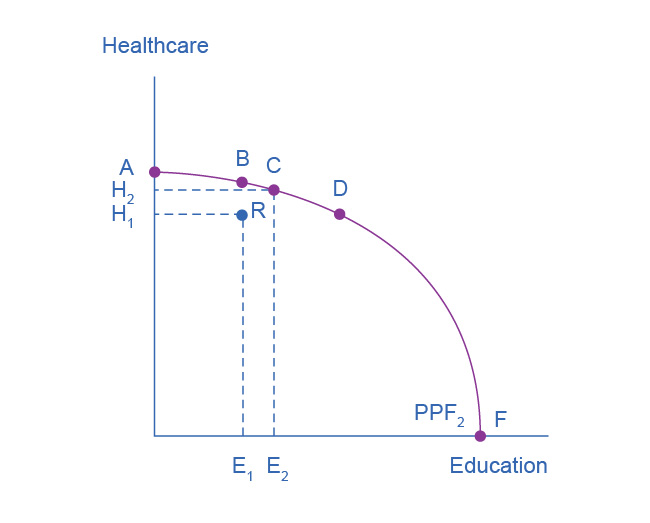
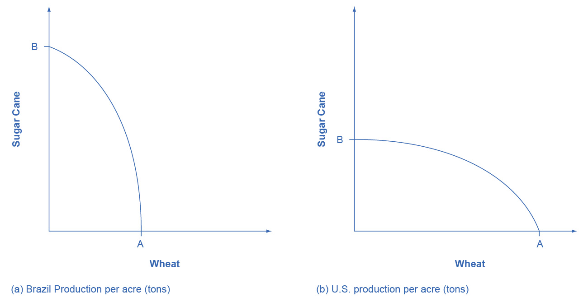

2.2 The Production Possibilities Frontier and Social Choices
Learning Objectives
By the end of this section, you will be able to:
- Interpret production possibilities frontier graphs
- Contrast a budget constraint and a production possibilities frontier
- Explain the relationship between a production possibilities frontier and the law of diminishing returns
- Contrast productive efficiency and allocative efficiency
- Define comparative advantage
Just as individuals cannot have everything they want and must instead make choices, society as a whole cannot have everything it might want, either. This section of the chapter will explain the constraints society faces, using a model called the production possibilities frontier (PPF). There are more similarities than differences between individual choice and social choice. As you read this section, focus on the similarities.
Because society has limited resources (e.g., labor, land, capital, raw materials) at any point in time, there is a limit to the quantities of goods and services it can produce. Suppose a society desires two products, healthcare and education. The production possibilities frontier in Figure 2.3 illustrates this situation.

Figure 2.3 A Healthcare vs. Education Production Possibilities Frontier This production possibilities frontier shows a tradeoff between devoting social resources to healthcare and devoting them to education. At A all resources go to healthcare and at B, most go to healthcare. At D most resources go to education, and at F, all go to education.
Figure 2.3 shows healthcare on the vertical axis and education on the horizontal axis. If the society were to allocate all of its resources to healthcare, it could produce at point A. However, it would not have any resources to produce education. If it were to allocate all of its resources to education, it could produce at point F. Alternatively, the society could choose to produce any combination of healthcare and education on the production possibilities frontier. In effect, the production possibilities frontier plays the same role for society as the budget constraint plays for Alphonso. Society can choose any combination of the two goods on or inside the PPF. However, it does not have enough resources to produce outside the PPF.
Most importantly, the production possibilities frontier clearly shows the tradeoff between healthcare and education. Suppose society has chosen to operate at point B, and it is considering producing more education. Because the PPF is downward sloping from left to right, the only way society can obtain more education is by giving up some healthcare. That is the tradeoff society faces. Suppose it considers moving from point B to point C. What would the opportunity cost be for the additional education? The opportunity cost would be the healthcare society has to forgo. Just as with Alphonso’s budget constraint, the slope of the production possibilities frontier shows the opportunity cost. By now you might be saying, “Hey, this PPF is sounding like the budget constraint.” If so, read the following Clear It Up feature.
Clear It Up
What’s the difference between a budget constraint and a PPF?
There are two major differences between a budget constraint and a production possibilities frontier. The first is the fact that the budget constraint is a straight line. This is because its slope is given by the relative prices of the two goods, which from the point of view of an individual consumer, are fixed, so the slope doesn't change. In contrast, the PPF has a curved shape because of the law of the diminishing returns. Thus, the slope is different at various points on the PPF. The second major difference is the absence of specific numbers on the axes of the PPF. There are no specific numbers because we do not know the exact amount of resources this imaginary economy has, nor do we know how many resources it takes to produce healthcare and how many resources it takes to produce education. If this were a real world example, that data would be available.
Whether or not we have specific numbers, conceptually we can measure the opportunity cost of additional education as society moves from point B to point C on the PPF. We measure the additional education by the horizontal distance between B and C. The foregone healthcare is given by the vertical distance between B and C. The slope of the PPF between B and C is (approximately) the vertical distance (the “rise”) over the horizontal distance (the “run”). This is the opportunity cost of the additional education.
The PPF and the Law of Increasing Opportunity Cost
The budget constraints that we presented earlier in this chapter, showing individual choices about what quantities of goods to consume, were all straight lines. The reason for these straight lines was that the relative prices of the two goods in the consumption budget constraint determined the slope of the budget constraint. However, we drew the production possibilities frontier for healthcare and education as a curved line. Why does the PPF have a different shape?
To understand why the PPF is curved, start by considering point A at the top left-hand side of the PPF. At point A, all available resources are devoted to healthcare and none are left for education. This situation would be extreme and even ridiculous. For example, children are seeing a doctor every day, whether they are sick or not, but not attending school. People are having cosmetic surgery on every part of their bodies, but no high school or college education exists. Now imagine that some of these resources are diverted from healthcare to education, so that the economy is at point B instead of point A. Diverting some resources away from A to B causes relatively little reduction in health because the last few marginal dollars going into healthcare services are not producing much additional gain in health. However, putting those marginal dollars into education, which is completely without resources at point A, can produce relatively large gains. For this reason, the shape of the PPF from A to B is relatively flat, representing a relatively small drop-off in health and a relatively large gain in education.
Now consider the other end, at the lower right, of the production possibilities frontier. Imagine that society starts at choice D, which is devoting nearly all resources to education and very few to healthcare, and moves to point F, which is devoting all spending to education and none to healthcare. For the sake of concreteness, you can imagine that in the movement from D to F, the last few doctors must become high school science teachers, the last few nurses must become school librarians rather than dispensers of vaccinations, and the last few emergency rooms are turned into kindergartens. The gains to education from adding these last few resources to education are very small. However, the opportunity cost lost to health will be fairly large, and thus the slope of the PPF between D and F is steep, showing a large drop in health for only a small gain in education.
The lesson is not that society is likely to make an extreme choice like devoting no resources to education at point A or no resources to health at point F. Instead, the lesson is that the gains from committing additional marginal resources to education depend on how much is already being spent. If on the one hand, very few resources are currently committed to education, then an increase in resources used for education can bring relatively large gains. On the other hand, if a large number of resources are already committed to education, then committing additional resources will bring relatively smaller gains.
This pattern is common enough that economists have given it a name: the law of increasing opportunity cost, which holds that as production of a good or service increases, the marginal opportunity cost of producing it increases as well. This happens because some resources are better suited for producing certain goods and services instead of others. When government spends a certain amount more on reducing crime, for example, the original increase in opportunity cost of reducing crime could be relatively small. However, additional increases typically cause relatively larger increases in the opportunity cost of reducing crime, and paying for enough police and security to reduce crime to nothing at all would be a tremendously high opportunity cost.
The curvature of the production possibilities frontier shows that as we add more resources to education, moving from left to right along the horizontal axis, the original increase in opportunity cost is fairly small, but gradually increases. Thus, the slope of the PPF is relatively flat near the vertical-axis intercept. Conversely, as we add more resources to healthcare, moving from bottom to top on the vertical axis, the original declines in opportunity cost are fairly large, but again gradually diminish. Thus, the slope of the PPF is relatively steep near the horizontal-axis intercept. In this way, the law of increasing opportunity cost produces the outward-bending shape of the production possibilities frontier.
Productive Efficiency and Allocative Efficiency
The study of economics does not presume to tell a society what choice it should make along its production possibilities frontier. In a market-oriented economy with a democratic government, the choice will involve a mixture of decisions by individuals, firms, and government. However, economics can point out that some choices are unambiguously better than others. This observation is based on the concept of efficiency. In everyday usage, efficiency refers to lack of waste. An inefficient machine operates at high cost, while an efficient machine operates at lower cost, because it is not wasting energy or materials. An inefficient organization operates with long delays and high costs, while an efficient organization meets schedules, is focused, and performs within budget.
The production possibilities frontier can illustrate two kinds of efficiency: productive efficiency and allocative efficiency. Figure 2.4 illustrates these ideas using a production possibilities frontier between healthcare and education.

Figure 2.4 Productive and Allocative Efficiency Productive efficiency means it is impossible to produce more of one good without decreasing the quantity that is produced of another good. Thus, all choices along a given PPF like B, C, and D display productive efficiency, but R does not. Allocative efficiency means that the particular mix of goods being produced—that is, the specific choice along the production possibilities frontier—represents the allocation that society most desires.
Productive efficiency means that, given the available inputs and technology, it is impossible to produce more of one good without decreasing the quantity that is produced of another good. All choices on the PPF in Figure 2.4, including A, B, C, D, and F, display productive efficiency. As a firm moves from any one of these choices to any other, either healthcare increases and education decreases or vice versa. However, any choice inside the production possibilities frontier is productively inefficient and wasteful because it is possible to produce more of one good, the other good, or some combination of both goods.
For example, point R is productively inefficient because it is possible at choice C to have more of both goods: education on the horizontal axis is higher at point C than point R (E2 is greater than E1), and healthcare on the vertical axis is also higher at point C than point R (H2 is great than H1).
We can show the particular mix of goods and services produced—that is, the specific combination of selected healthcare and education along the production possibilities frontier—as a ray (line) from the origin to a specific point on the PPF. Output mixes that had more healthcare (and less education) would have a steeper ray, while those with more education (and less healthcare) would have a flatter ray.
Allocative efficiency means that the particular combination of goods and services on the production possibility curve that a society produces represents the combination that society most desires. How to determine what a society desires can be a controversial question, and is usually a discussion in political science, sociology, and philosophy classes as well as in economics. At its most basic, allocative efficiency means producers supply the quantity of each product that consumers demand. Only one of the productively efficient choices will be the allocatively efficient choice for society as a whole.
Why Society Must Choose
In Welcome to Economics! we learned that every society faces the problem of scarcity, where limited resources conflict with unlimited needs and wants. The production possibilities curve illustrates the choices involved in this dilemma.
Every economy faces two situations in which it may be able to expand consumption of all goods. In the first case, a society may discover that it has been using its resources inefficiently, in which case by improving efficiency and producing on the production possibilities frontier, it can have more of all goods (or at least more of some and less of none). In the second case, as resources grow over a period of years (e.g., more labor and more capital), the economy grows. As it does, the production possibilities frontier for a society will tend to shift outward and society will be able to afford more of all goods. In addition, over time, improvements in technology can increase the level of production with given resources, and hence push out the PPF.
However, improvements in productive efficiency take time to discover and implement, and economic growth happens only gradually. Thus, a society must choose between tradeoffs in the present. For government, this process often involves trying to identify where additional spending could do the most good and where reductions in spending would do the least harm. At the individual and firm level, the market economy coordinates a process in which firms seek to produce goods and services in the quantity, quality, and price that people want. However, for both the government and the market economy in the short term, increases in production of one good typically mean offsetting decreases somewhere else in the economy.
The PPF and Comparative Advantage
While every society must choose how much of each good or service it should produce, it does not need to produce every single good it consumes. Often how much of a good a country decides to produce depends on how expensive it is to produce it versus buying it from a different country. As we saw earlier, the curvature of a country’s PPF gives us information about the tradeoff between devoting resources to producing one good versus another. In particular, its slope gives the opportunity cost of producing one more unit of the good in the x-axis in terms of the other good (in the y-axis). Countries tend to have different opportunity costs of producing a specific good, either because of different climates, geography, technology, or skills.
Suppose two countries, the US and Brazil, need to decide how much they will produce of two crops: sugar cane and wheat. Due to its climatic conditions, Brazil can produce quite a bit of sugar cane per acre but not much wheat. Conversely, the U.S. can produce large amounts of wheat per acre, but not much sugar cane. Clearly, Brazil has a lower opportunity cost of producing sugar cane (in terms of wheat) than the U.S. The reverse is also true: the U.S. has a lower opportunity cost of producing wheat than Brazil. We illustrate this by the PPFs of the two countries in Figure 2.5.

Figure 2.5 Production Possibility Frontier for the U.S. and Brazil The U.S. PPF is flatter than the Brazil PPF implying that the opportunity cost of wheat in terms of sugar cane is lower in the U.S. than in Brazil. Conversely, the opportunity cost of sugar cane is lower in Brazil. The U.S. has comparative advantage in wheat and Brazil has comparative advantage in sugar cane.
When a country can produce a good at a lower opportunity cost than another country, we say that this country has a comparative advantage in that good. Comparative advantage is not the same as absolute advantage, which is when a country can produce more of a good. In our example, Brazil has an absolute advantage in sugar cane and the U.S. has an absolute advantage in wheat. One can easily see this with a simple observation of the extreme production points in the PPFs of the two countries. If Brazil devoted all of its resources to producing wheat, it would be producing at point A. If however it had devoted all of its resources to producing sugar cane instead, it would be producing a much larger amount than the U.S., at point B.
The slope of the PPF gives the opportunity cost of producing an additional unit of wheat. While the slope is not constant throughout the PPFs, it is quite apparent that the PPF in Brazil is much steeper than in the U.S., and therefore the opportunity cost of wheat is generally higher in Brazil. In the chapter on International Trade you will learn that countries’ differences in comparative advantage determine which goods they will choose to produce and trade. When countries engage in trade, they specialize in the production of the goods in which they have comparative advantage, and trade part of that production for goods in which they do not have comparative advantage. With trade, manufacturers produce goods where the opportunity cost is lowest, so total production increases, benefiting both trading parties.